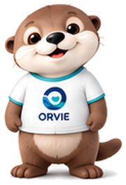
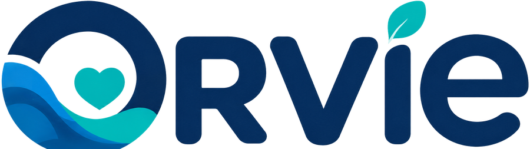
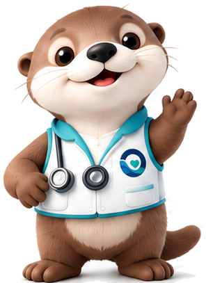
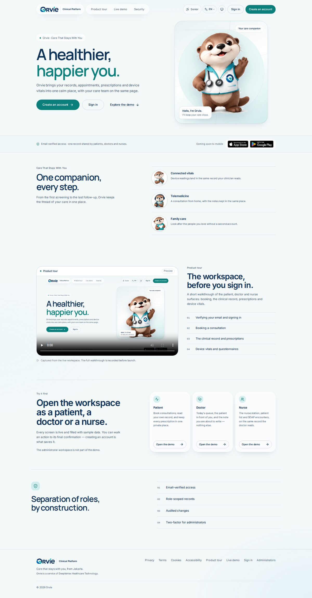
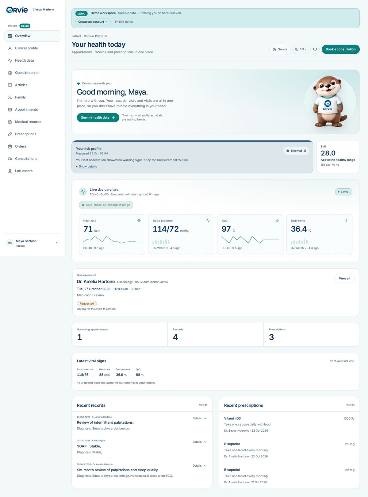
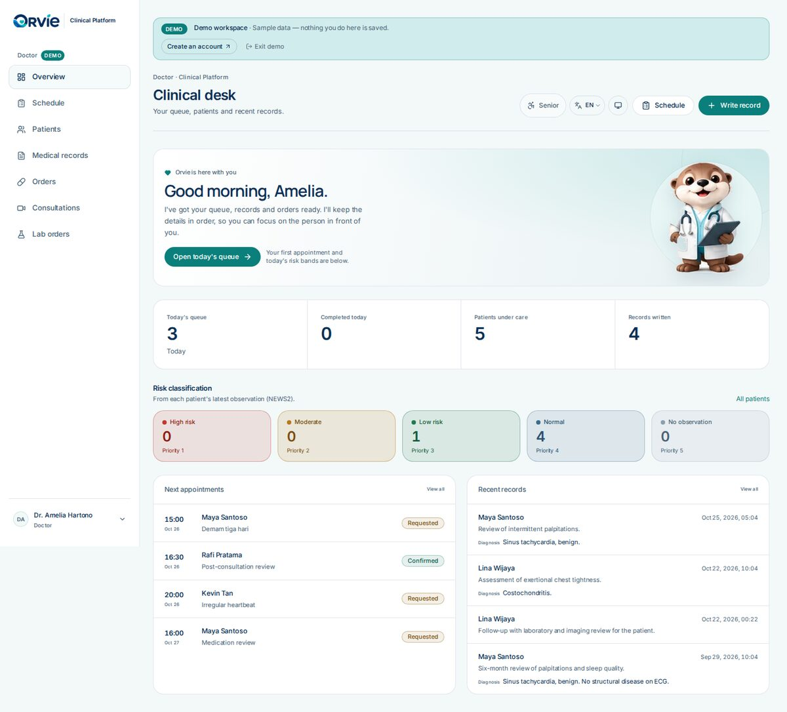
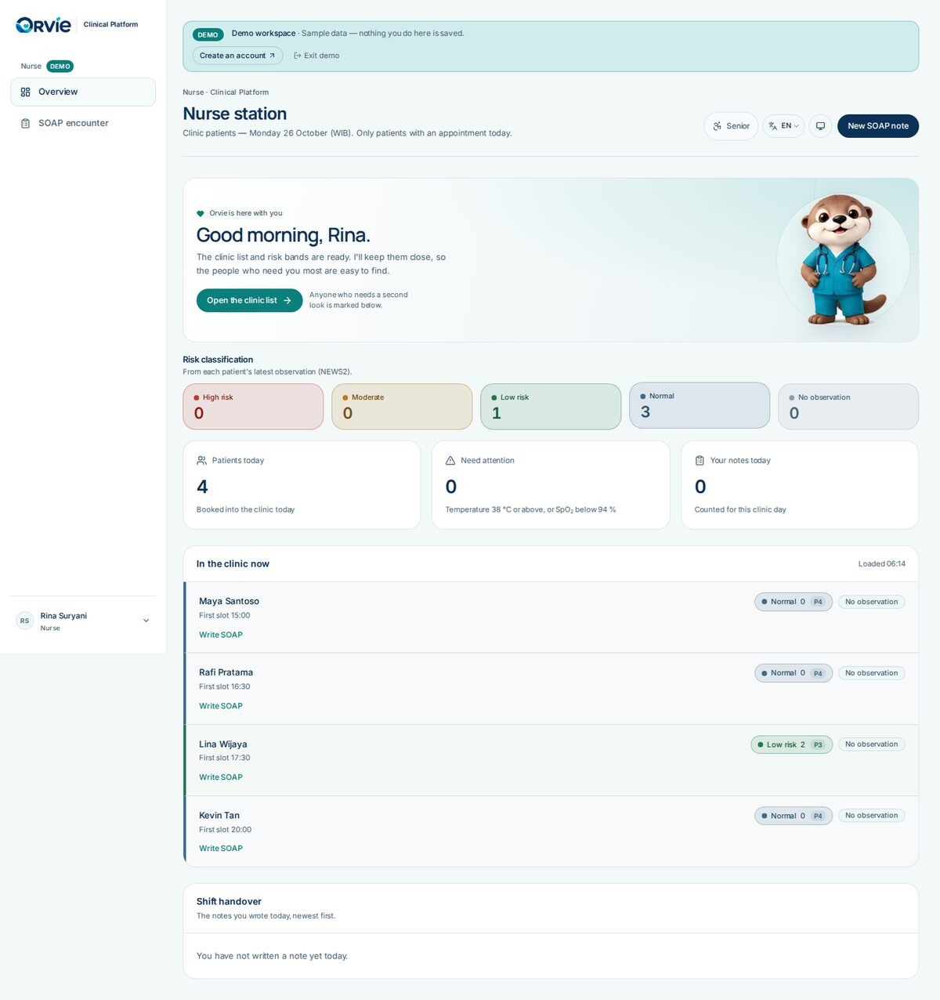

For patients
Keep it together.
Records, visits and vitals in one place, so you don't have to hold everything in your head.

Open the patient demo →
Orvie · Clinical Platform
One calm workspace for patients, doctors and nurses. Records, appointments, prescriptions and device vitals, together, with the care team on the same page.
Read-only demo. The pilot database stays on a private tailnet; the public demo link is a temporary tunnel.

Your care companionOne record, three roles
Every screen below is the live Orvie build with sample data. The public demo is read-only; creating an account is what saves an action.




A companion for each role
Orvie wears the outfit that belongs to the person in front of the screen. The greeting changes with the role and the time of day.
For patients
Records, visits and vitals in one place, so you don't have to hold everything in your head.

Open the patient demo →For doctors
The queue, records and orders are ready, so the details stay in order and the patient gets your attention.
Open the doctor demo →For nurses
The clinic list and risk bands stay close, so the people who need you most are easy to find.
Open the nurse demo →The design layer
Orvie is a design fork of the Asclepius dashboard. The palette, type, lockup, mascot and copy changed. The schema, API contracts and clinical features did not.
No migration, no API contract change, no dependency change. The triage palette stays clinical.
Patients, doctors and nurses still read the same PostgreSQL record, produced by the clinic tablet and patient app.
The public page is a showcase. The pilot preview and database stay on the private tailnet.
Open the patient, doctor or nurse workspace with sample data. The administrator workspace is not part of the public demo.